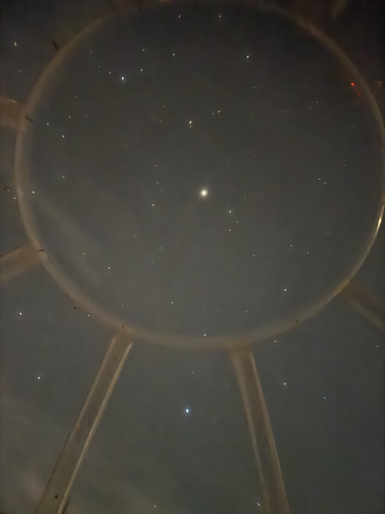
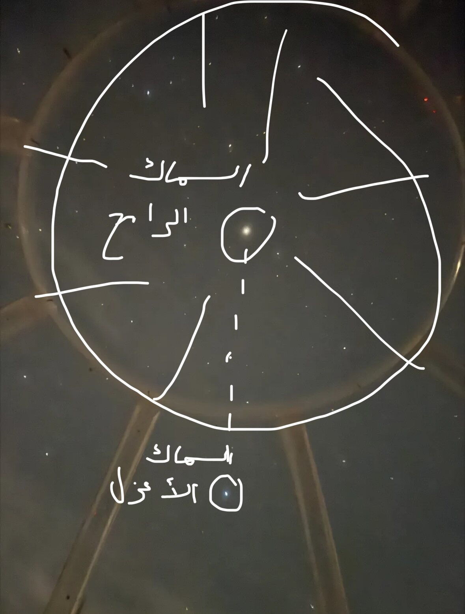
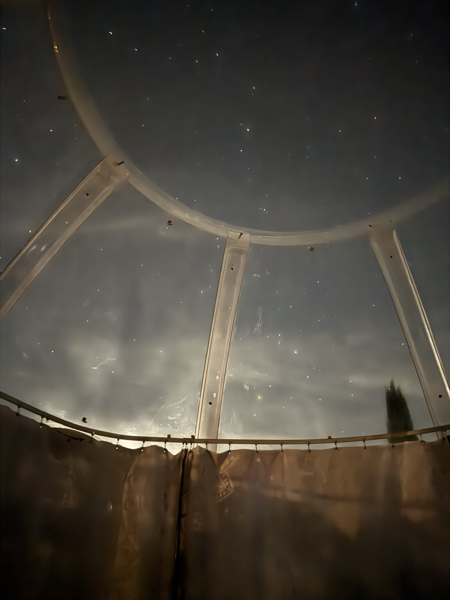
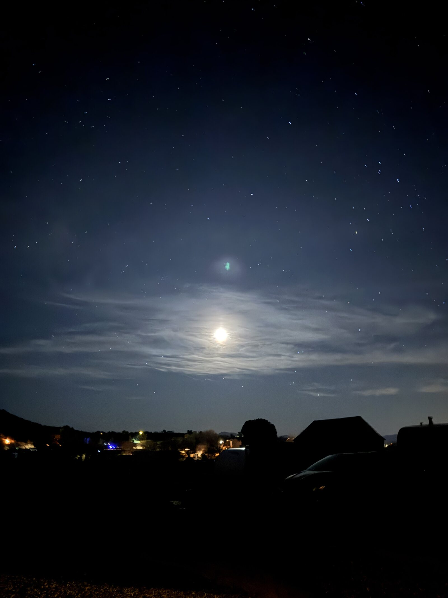

4
Field Notes
Al-Gharameel desert, October 2020
“I’m so content.
I’m in Al-Gharameel desert. This spot, these stars, feel like home. I’m on my back with my arms in the air and I’m tracing the constellations that will lead me back to civilization.
“I’m so content.
I’m in Al-Gharameel desert. This spot, these stars, feel like home. I’m on my back with my arms in the air and I’m tracing the constellations that will lead me back to civilization.

My fingers measure the degrees between the stars and my arms can gauge the rotation of the sky.
After a while with my hands up, the roles reverse.
It feels like I’ve been orchestrating the harmonious orbits above me rather than measuring them.
I’m breathing in the culture. Language, environment, sky, land, peace, need, shelter, direction, awareness. These are ideas discussed from the distance of continents and centuries. But here, everyday I speak to a woman and her grandson who recognize me by the sound of my feet on the sand. I sit with the old Bedouin men who don’t mind how I’m young, female, and foreign. They laugh at my accent and the simpleness of my Arabic. Yet, they teach me how everything came to be. They surprise me. With every line of poetry, they have the quantitative data to back it up. It all connects. I’m experiencing a new kind of clarity - one that surfaced from a calculated complexity unique only to nature. I’ve observed and studied patterns and paths, points and lines, far away from their usual digital context.
This is where it all came from, after all. Looking up at the sky’s ambiguity allowed our minds to wander into the study of time, math, philosophy, religions, and all of what makes us feel human, like vulnerability, reassurance, and wonder…
I’m really feeling it. Just looking up is giving me more insight than I could have gained in lifetimes. I wish I could stay here forever.”
Al-Gharameel desert · October 2, 2021
"Once again, I'm in the middle of Al-Gharameel desert. I’m on my back, my arms up in the air. I’m laying on a pillow but my back is on the ground.
"Once again, I'm in the middle of Al-Gharameel desert. I’m on my back, my arms up in the air. I’m laying on a pillow but my back is on the ground.
I can still feel the coolness of the sand through the pillow. Against my back, my head, my arms, my legs. The same familiar coolness always welcomes me.
I can see everything above me. I don’t want to take my eyes off of the sky. I feel like I’ll miss something, even though these stars have been above me before I was born, before my ancestors were born, before the earth was formed.
These stars have been here before we were able to perceive them. And yet, I don’t even want to blink.
The silence is deafening. It’s a different kind of silence. It’s almost heavy. It feels like cotton in my ears.
My breathing seems so loud here.
The gharameel (rock formations) surrounding me make the desert feel small. Like this spot is protected just for me. It doesn’t feel open. I don’t feel exposed. I feel surrounded and safe. I’m being watched over.
My hands keep reaching up to touch the stars for some reason. I always do this without realizing, and I only notice after my arms start to feel sore from keeping them up.
No matter how hard I try, I will never touch the stars... Yet, my arms stretch upwards,
and I realize it’s not about the feeling of touching, but about the act of reaching.
I’m a bit chilly, but the tea in my stomach is warm and sweet.
These moments of reflection are so fleeting. I need to write it down as it's happening.
I look back at Jupiter, the planet that keeps my time. It’s almost behind the mountains, which means it’s nearly time to go. I glance back at brilliant colors of the Milky Way. I'm addicted to feeling so small, and allowing the universe to remind me of it. Maybe I can ignore Jupiter’s warnings for a few more moments."
Al-Gharameel desert, January 2022
“My chair is reclined back, my knees are curled to my chest, and I’ve mapped out all the stars with my hands.
Polaris and Cassiopeia are one hand apart. Al Thuraya and Aldebaran are three fingers apart.
“My chair is reclined back, my knees are curled to my chest, and I’ve mapped out all the stars with my hands.
Polaris and Cassiopeia are one hand apart. Al Thuraya and Aldebaran are three fingers apart.
The process felt like it took forever, but eventually, it was as if I had touched every star in the sky.
I’ve been looking up for too long. I feel untethered. My balance is off. I’ve drifted too far and my mind became dizzy. I’ve been looking at objects that are so far away, for so long, that I’ve forgotten my own size.
So I took off my shoes and walked barefoot in the sand for as long as I could. To bring myself back to Earth.
I mapped out the stars because I know that in the city, with all the lights, I’ll only be able to see one or two stars as reference points. So I’m going to use my hands to map out the rest from memory.”
Flagstaff, Arizona, March 2023
“My time at GSAPP was coming to a close.
“My time at GSAPP was coming to a close.
I should be spending this last month working harder than ever, seeing as I’m so far from where I thought I would be, but with the current events unfolding, I’ve been feeling so discouraged. Not only as a Middle Eastern woman, as a lover and supporter of a broken Palestine, but also as someone who has a deeply cultural and ancestral connection to her work. My work is not clearly political, but it is definitely there, thrumming under the surface, for those who know how to see it. It is definitely very proudly Arabic, and celebrating a rich history of life in the desert.
I left NYC with a heavy heart. What am I doing? I started with such a fire for my work, but after everything that’s been happening, it all feels like I’m in the wrong place, benefitting the wrong people. It’s over.
So in an attempt to push through, I took this trip.
I took a 6 hour plane ride from NYC to Phoenix, Arizona, then rented a car and drove up to Flagstaff.
I spent the next three days there.
This is my journal entry on the night of the third day:
3:15 AM -
I woke up again. I looked up.
Usually I wake up and forget where I am for a second. It didn’t happen this time. I woke up, and before I opened my eyes, I knew what I was going to see.
The sky was glowing with stars. The whole pod felt bathed in their light. I had a gharameel moment where I finally felt like it was dark enough that it actually wasn’t dark at all. That the stars was illuminating the sky.
Last night, I made a last second decision that I didn’t want to spend another night in my hotel at flagstaff. I wanted to sleep underneath the stars, no matter how cold it was. So I googled the options, booked this desert pod, packed all my stuff, drove for an hour or so down some remote, dark, twists and turns, hoping and praying it would be worth it. I arrived at around 11:45 pm. And it was definitely worth it.
The cold bites my face, shoulders, and hands, but the rest of my body is warm underneath the heated mattress and blanket. I have many, many layers on. I’m glad I brought the extra thermal leggings.
I kept looking up. It will be a long time until I see the stars like this again.
This trip left me with many conflicting feelings. I travelled to the first international dark sky city, a small town in Arizona that was famous for its astro-tourism, but also to visit one of my personal heroes, Dr. Adams. She spent over 25 years studying the Arabic culture of the stars. She was phenomenal at translating classical arabic poetry; qutrub, ibn qutaibah, dhu alrummah, etc, and mapping out their poetry into constellations in the night sky. She fell so in love with the field that she did her PhD on this. As a non-Arab speaking white woman. She’s incredible.
I met her, she took me to different national parks, we had an amazing dinner, then continued our night to do some stargazing. She shared some of her stories, and I shared mine. She is the best in the world at this and I felt humbled and amazed to be able to teach her what I knew as well.
The good feelings:
I know more than I think I do. In the three days I was in Flagstaff, all I did was astronomy tours and stargazing with the best expert guides, and in all the experiences, I knew much more than the experts. I felt like my imposter syndrome was so silly. Im knowledgeable in this and I DO have something to offer. I felt so much better about myself and my experience. I know I’m young, but I have a good foundation to continue.
The bad feelings:
But I also felt increasingly like it was a dead field. I felt grief almost. It was an amazing world of knowledge, but it was simply too small.
That night, I drove away from Flagstaff in silence. I was supposed to be there for one more night, but I felt it was time to leave. I spent the trip talking back and forth with myself.
I found a dusty niche, I fell in love with it, I hope to become an expert, and I don’t think I will ever find anyone who appreciates it. What does this have to do with architecture? I mean, sure, there are some connections, but not in a real career-pushing way.
I felt so discouraged. I found a world of magic and science, but it only truly comes alive when you’re away from the city. Explaining it from a screen is the worst thing you can do for astronomy, yet, that is what my life will be.
I’m a creative, a designer, a writer. I’m also a native arabic speaker, I can continue this work and do lovely, amazing, beautiful things with it.
But then again, very little people will actually see the beauty in it. Not enough for it to be worth it. If I didn’t need the appreciation, or the money, or the security in it, if I worked alone for the rest of my life, like a mad scientist, or a tragically misunderstood scholar, then cultural astronomy works perfectly fine. I truly have a passion for it. I know Dr. Adams shares my passion.
When we were under the sky, we spoke so excitedly about it. She pointed out things and we would laugh! I laughed because I was so delighted to be in her presence, she laughed because she finally was speaking to someone that truly GETS it. I know that passion is irrational, and it makes you crazy, and it fuels you even when nothing else seems to make sense. Why did it have to be in this? Why did I have to find something that is so hard to see on a day to day basis? That it was very difficult to show others? A field that was frozen in time, that was limited, that had a very small audience?
Is it worth it to continue? Will I look back and think this passion was stupid? Or will I be glad I pushed through?
I’m feeling so emotional and disheartened.
Dr. Danielle is so inspiring. She knows so so so much, she detected how the sky changed based on the poetry she read. The poetry she translated masterfully. She found errors in manuscripts that are 2000 years old. She laughed at Al-Biruni, and how he described the Arabs.
She took me to Sunset Crater, the darkest sky in flagstaff, and her favorite vantage point. After an hour and a half of sharing our sky stories, I told her “only you could do this. It had to be someone who was already an astronomer, who then studied Arabic classical poetry. These lines never cross. You’re an expert in two very different things, and that’s why you unlocked this magic. And you did all of this as a non native Arabic speaker. Mashallah. I’m so in awe of you.”
She smiled and said “You give me too much credit, thank you. But I think I’m passing the baton to you now. You’ve got the knowledge, the understanding, the passion. You’ll take this much farther than I did.”
I just replied with “No way.” And we laughed and stopped there.
But I felt emotional after that. She touched on something. I was about to go back to Columbia, where nobody knows what I’m talking about. Then back to Kuwait, where nobody will know the extent of what I’m trying to do. I’ll have to take a job in a firm or something that I don’t really believe in.
It’s all very heartbreaking to me. But my emotions are heightened right now. I just really, really love the sky. That’s all. I love it. And I know it. I’m familar with it. And I want to study it. And I want to show it to people. That’s what I want. It makes me want to leave all this in the past as a distant memory.
It’s so tough. I felt so important in Flagstaff. Tyler, my first stargazing guide, who has been doing astronomy his whole life, sat down and asked me about the sky. He took my contact, he wanted me to teach him more. Me! He had multiple degrees. And he wants MY knowledge. But the moment I leave I feel so unimportant. I have nothing. I’m useless in the workforce. I wonder what my next step will be. Will I ever touch astronomy again?
Anyways. it doesn’t matter tonight. All that matters is that I look up.
Directly above me is السماك الرامح، and beneath it is السماك الأعزل.
Wait a minute... I’ve never seen this sky before. It’s 3:40 AM in spring. I’ve never been in the desert at this time on this day of the year.
I spent a moment looking up. I felt something shift in my brain.
السماك الرامح فوقي بالضبط. السماك الرامح تحته على طول… لحظة.
Sometimes, stars have weird names. For me, these two stars names make no sense. I know technically that السماك is the pole in the middle of a tent. It holds it up. So these two stars are called the pole that lifts the tent, but they are always in the edge of the sky. I see the sky in winter, and these stars never ever made sense to me. I also never saw them together. I see one sometimes. What’s so odd is that all the other stars are part of a drawing or a figure or a story. These just exist as a weird pair.
I learned recently that some stars only work in a certain “perfect” positions. The idea of السماك is that it is the pole in the middle of the tent, right? So technically when they are on top of each other, it is like they form a straight line, raising the sky as if it were a large starry tent.

And right now not only are they directly on top of each other (which I’ve never seen), the top one is positioned right in the middle of my pod. WAIT!!!!!!!!!!!!! HOW PERFECT IS THIS! I get it now!!!!I’m so lucky to have woken up now, here, in this season, in this latitude, at this time, in a transparent pod. It’s 3:40 AM, and they are perfectly aligned in the sky. One of them is at the top of my tent, and the other is right beneath it. As if they are raising the sky, or maybe just the tent of my little pod. OMG!!!!!!! THESE TWO SPECIFICALLY WERE ALWAYS A MYSTERY TO ME!!!! I SEE IT NOW!!!!!!!!!

I could cry. In fact, I did cry. ما راح اجذب على نفسي. I really needed this.
Edit 10 minutes later:
I also see a glow to my left. Could the moon be rising? بنات نعش is behind my head, so to my left is East. It could be.

It was a moon rise!

This is perfect. I saw the stars enough, so I’m ready for them to be washed away by the moon. Maybe this is a perfect transition back to New York’s muddy sky.
This page is still under construction...